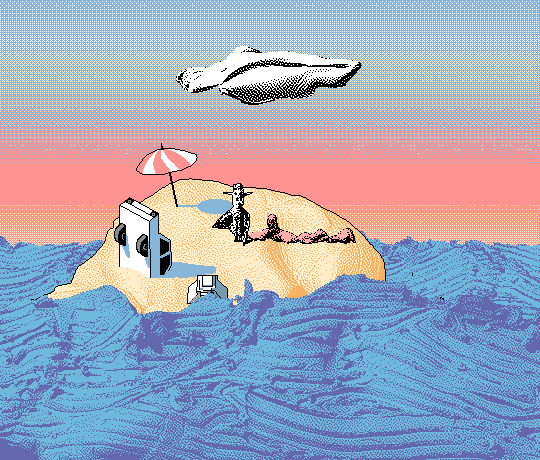
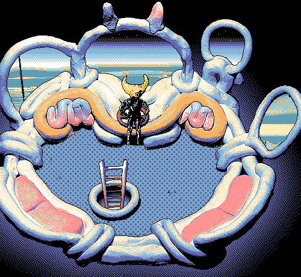
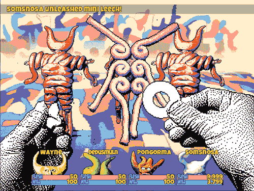
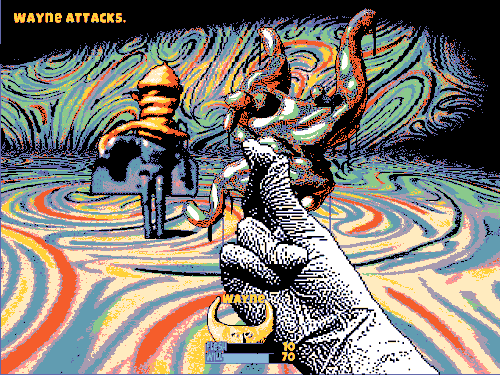

HYLICS
What better place to start than the beginning.
Story and Dialogue
A strange aspect of Hylics is that its story is almost nonexistent, mainly caused by the game’s dialogue being randomly generated. NPCs will spout random strings of text that appear as though they have meaning, however, in reality they are meaningless. When talking to specific NPCs there is some premade dialogue, but most is simply nonsense.

You start the game as the main protagonist, Wayne, and are instructed to defeat the King of the Moon, Gibby. Other than this, there is little relevant explanation why Wayne must defeat Gibby or even go adventuring in the first place.
You can add up to three other adventurers, but their reasons for joining you are shallow at best. This is not a bad thing as Hylics is a short game, beatable in under four hours. I feel as though deep exposition on the world and characters of Hylics would have detracted from its cryptic nature and possibly Hylics’ best feature, its art style.
Art
The first thing I noticed about Hylics was the little red dragon icon that is used for RPG Maker, Hylics was made in RPG Maker VX Ace to be precise. I have played RPG Maker games in the past and mainly experienced the same/similar assets reused throughout all of them to some degree. This was not the case with Hylics.
Except for a few weapon and equipment icons, Hylics has fully custom art. The enemies, attacks, abilities, and locations are all unique. It is refreshing to see this amount of effort expended on art when premade assets are so readily available.

Most or everything seen in Hylics is claymation. Enemies and objects within the world have all been animated using clay, making the world so much more interesting and dynamic than any RPG I have played before. Playing Hylics never felt like I was playing a game on the RPG Maker engine—a testament to how special this game truly is.
My favorite pieces of art are the ability and item animations. They are incredible and peerless. My favorite animation is the juice box item. When used, a typical juice box appears in front of the player. It spins around and is crushed as if the player is sucking down the delicious juice with great ferocity. All items and abilities have these similar awesome animations, making each enjoyable.

More Art



